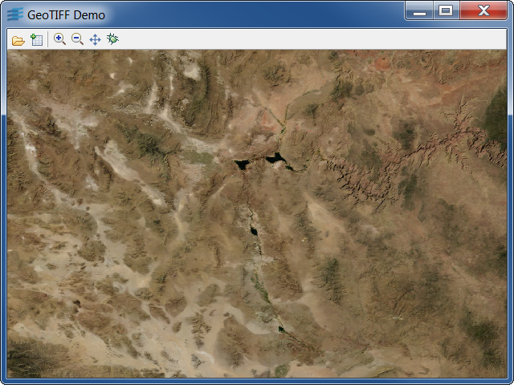

Sample: geotiff
GeoTIFF Viewer and Tiler
GeoTIFF viewer with Load-On-Demand implementation.

This sample shows how to read GeoTIFF files with
Rogue Wave Views. This sample can load tiled GeoTIFF
files and is able to produce a tiled GeoTIFF files
(the tile width and height must be a multiple of 16
then).
Using the Sample
You can launch the sample without any argument. In this
case, the sample will load a file located in
the data directory.
To show the Load-On-Demand mechanism in action, you must
provide a tiled TIFF file. See About the GeoTIFF Format
to know how to find some data.
About the GeoTIFF Format
The GeoTIFF format is an extension of the TIFF format in the way that it defines
cartographic data embedded as tags. Among many others, cartographic tags include
georeferencing and tiling information. For more information about the GeoTIFF
format, visit
http://www.remotesensing.org/geotiff/geotiff.html
Classes involved:
IlvGeoTIFFTileLoaderIlvGeoTIFFLayerIlvGeoTIFFReader
Source files: